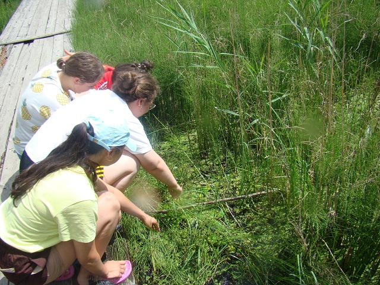
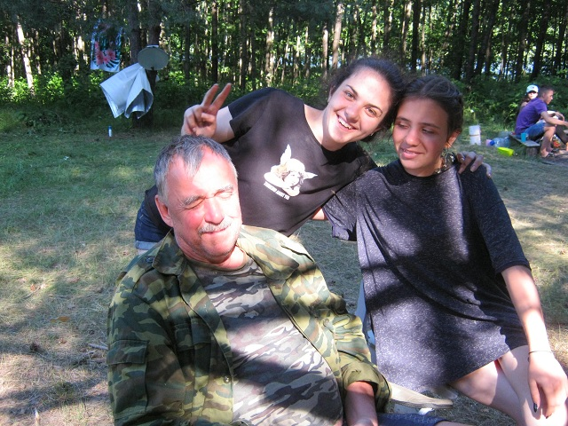
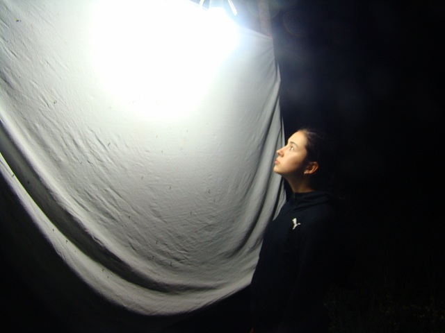
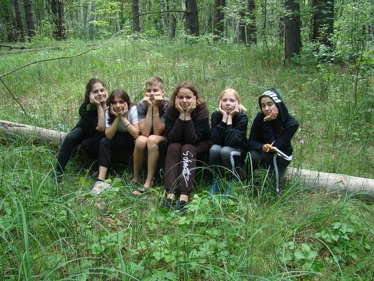

2021 год
В июне - июле 2021 года проходили выеэдные экологические экспедиции в
составе учащихся МБОУ гимназии № 1. Экспедиции проходили в
Двориковском водно-лесном комплексе имени И.А. Коровина. Это один
из стационарных пунктов работы экологической школы "В гостях у
природы",
уникальный по своему видовому биоразнообразию и природным ландшафтам.
В составе экспедиции почетными гостями были научный сотрудник
заповедника "Приволжская лесостепь" Горбушина Татьяна Викторовна и
сотрудник факультета ЕГФ ПГУ Полумордвинов О.А. Экспедиции проходили в
штатном режиме - работа проводилась по плану. Проводились радиальные
выходы по изучению гидробионтов, фитоценозов, мониторили изменения в
составе ночных булавоусых чешуекрылых. Впервые в Кузнецком районе был
обнаружен вид папоротника Сальвиния плавающая (Красная кника Пензенской
области, том 1, Растения. Это третья находка в Пензенской области. Во
второй половине
экспедиции подвела погода - температура снизилась, шли дожди. Это
несколько нарушило план работы и летний отдых учащихся. Но, в целом,
поставленные задачи были выполнены. Ребятам было жаль уезжать - все
надеятся на экспедицию 2022 года. Пожелаем хорошей погоды и успехов в
изучении уникальной природы данного комплекса, а также всех прелестей
летнего отдыха в 2022 году.
Аншлаг
Красота Шалкеевского пруда
Погода в середине экспедиции подвела
Экспедиционный быт
Лагерь пуст. Все ушли на экскурсию

Находка сальвинии плавающей - подсчёт
плотности
Сальвиния плавающая - Красная книга
Пензенской области
Клюева Даща - сколько же её здесь!
Юный помощник исследователей - Влад
Косынкин
Будущий врач - Ивановская Инна
Наша скромняшка - Павлова Юля
И Юля Иваню готовится стать врачом

Самая увлеченная - Клюева Даша
А нам и пруд по колено!
Цветут кувшинки и горец
Идёт зарастание Шалкеевского пруда
Отдыхаем после научных трудов
Саныч развлекается перед обедом

Когда ещё можно пошутить над любимым
учителем
Дмитрий Клыпа. Вспоминая школьные годы
В предвкушении обеда
Наш руководитель смывает пыль после
трудного дня
Ночной лов. А кто это к нам прилетел?

Холодновато. Плохо летят
Вот он какой - цветочек аленький
Мы молоды, веселы и полны сил!
Прогулка по плотине
Классно. Водичка тёплая

Обощли весь пруд по периметру
А здесь к воде не подойдешь
Плаун булавовидный - Красная книга
Красивый плаун
Вот такие мы смешливые
Следы невидимых зверей
Может быть следы кабана?
К нам гости в лагерь
В поисках ужовника - Красная книга
Слишком всё заросло

Не удалось найти ужовник
А мы не унываем!
Будут ещё новые открытия!
2001 год
2002 год
2003 год
2004 год
2005 год
2006 год
2007 год
2009 год
2010 год
2011 год
2012 год
2013 год
2013 год
2014 год
2015 год
2016 год
2017 год
2018 год
2019 год
2020 год
| 


{kind=link}
{kind=link}
{kind=link}
{kind=link}
{kind=link}
{kind=link}
{kind=link}
{kind=link}
{kind=link}
{kind=link}
{kind=link}
{kind=link}
{kind=link}
{kind=link}
{kind=link}
{kind=link}
{kind=link}
{kind=link}
{kind=link}
{kind=link}
{kind=link}
{kind=link}
{kind=link}
{kind=link}
{kind=link}
{kind=link}
{kind=link}
{kind=link}
{kind=link}
{kind=link}
{kind=link}
{kind=link}
{kind=link}
{kind=link}
{kind=link}
{kind=link}
{kind=link}
{kind=link}
{kind=link}